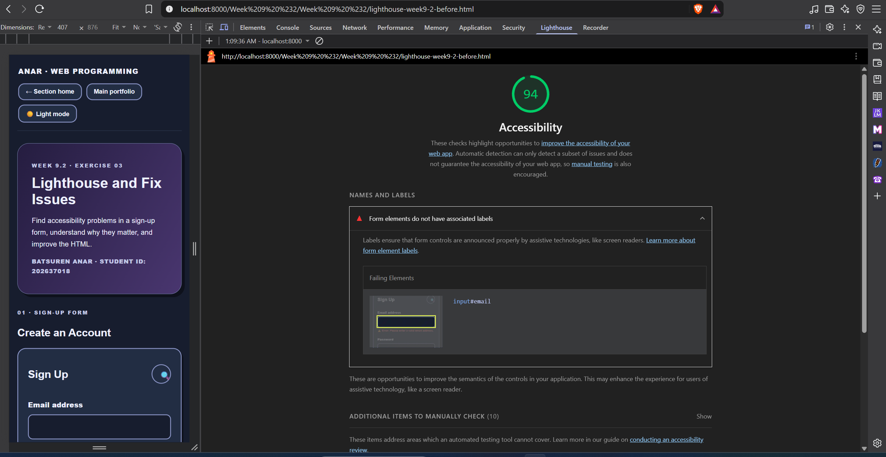
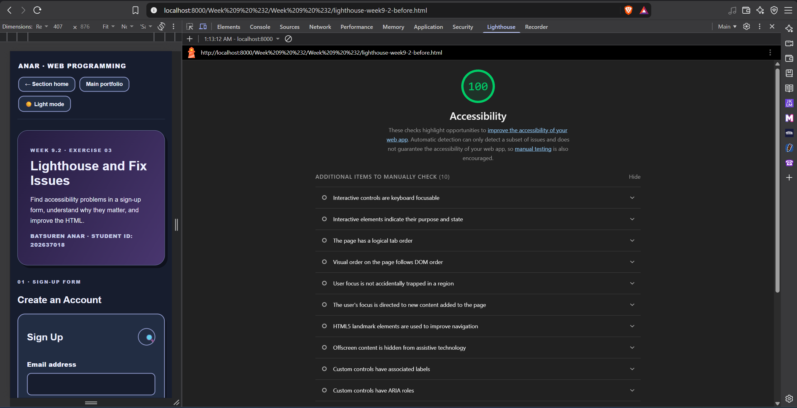

Testing Tools
- Google Chrome DevTools
- Google Lighthouse 13.5.0
- Chromium 158.0.0.0
- Desktop configuration
WEEK 9.2 · ACCESSIBILITY REPORT
Testing a sign-up form, identifying accessibility issues, applying corrections, and comparing real Lighthouse results.
BATSUREN ANAR · STUDENT ID: 202637018
01 · OBJECTIVE
The objective of this exercise was to evaluate the accessibility of my Week 9 #2 sign-up form using Google Lighthouse. I tested the page, reviewed the reported issue, corrected the form label, and ran Lighthouse again to verify the result.
02 · AUDIT ENVIRONMENT
Local test URL
http://localhost:8000/Week%209%20%232/Week%209%20%232/lighthouse-week9-2-before.html
The local test copy was used to demonstrate the effect of correcting an intentionally modified form label.
03 · LIGHTHOUSE RESULTS
The first Lighthouse test produced an accessibility score of 94. One failed audit was reported: Form elements do not have associated labels.
Lighthouse identified the email field
(input#email) because its label was not correctly
associated with the input.

The email label was not associated with the email input.
I corrected the HTML by adding a matching for
attribute to the label and an id to the input.
<label for="email">Email address</label>
<input
type="email"
id="email"
name="email">I ran Lighthouse again using the same local test URL. The accessibility score increased to 100, and Lighthouse reported zero failed audits.

04 · ACCESSIBILITY IMPROVEMENTS
Each form input has a visible label connected using
matching for and id attributes.
The search icon button includes an accessible name through
aria-label="Search".
The aria-describedby attribute connects
form inputs to their corresponding error messages.
Visible focus indicators help keyboard users identify the currently focused control.
05 · PUBLISHED PAGE
I also tested the published Week 9 #2 exercise page separately. Its actual Lighthouse accessibility score was 100, with 24 passed audits and zero failed audits.
Open the published Week 9 #2 exercise page →
Testing clarification: The 94-to-100 comparison above comes from a controlled local test copy with an intentionally modified email label. It is not a historical score of the published website. The separate published-page test already returned a score of 100.
06 · MANUAL REVIEW
Lighthouse also reported items requiring manual review. Automated testing cannot detect every accessibility issue, so keyboard and screen-reader testing remain important.
07 · REFLECTION
Through this exercise, I learned how form labels affect accessibility and how Lighthouse can identify problems in a web page. I understood that connecting a label to its input helps users identify and interact with form fields.
I also learned that a high Lighthouse score alone does not guarantee that a website is fully accessible. Manual testing, keyboard navigation, clear error messages, and accessible button names are also important.
08 · SUBMISSION
BATSUREN ANAR · 202637018